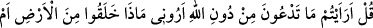
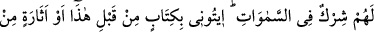

Sonuçta : “Kâfirler için hazırlanmış ateşten sakının” (Âl-i İmrân, 3/131) ifâdesi
“Allah’tan korkun, ona isyan etmeyin ki o da sizi cehenneme atmasın” demek olur. Evet,
kişi İslâm’ın ruhuna uygun bir te’vil ve yorumla bu işin sorumluluğundan çıkmaya
muktedir değilse, nassın/âyet ve hadisin zâhirini inkâr etmekle kâfir olur. En büyük
günahlardan biri de kişinin müslüman kardeşine “Allah’tan kork” demesi halinde
diğerinin buna cevap olarak “sen kendine bak, bunu bana sen mi emrediyorsun”
demesidir.
Rivâyet edildiğine göre Hârûn Reşîd askeriyle beraber bir sefer halindeyken bir
yahûdî, Hârûn Reşîd’e: “Allah’tan kork!” dedi. Hârûn Reşîd yahûdînin bu sözünü
duyunca atından indi. Allah’ın yüce ismine ta’zim için askerler de bineklerinden indiler.
Usul kitaplarında şöyle denilmektedir: Kişi göğe dokunacağına yemin etse bunu yerine
getirme vehim ihtimali olduğundan bu yemin geçerli bir yemindir. Çünkü göğe
dokunulabilir. Allah Teâlâ cinlerden hikâye ederek şöyle buyuruyor: “Biz göğe
dokunduk onu, kuvvetli bekçilerle ve ışınlarla doldurulmuş bulduk.” (Cin, 72/8).
Sonra bunu yerine getiremeyeceği için kendisine keffâret gerekir. Günahkâr olur. Çünkü
yeminden maksad, yemin edilen zâta tâzim etmek ve saygı göstermektir. Burada ise
Allah’ın adına hürmetsizlik yapılmıştır.
Akıllı insan, nasihatçinin sözünü kabul etmeli, Allah’tan korkmalı ve Allah’ın adına
tâzim ederek saygı göstermelidir ki Allah’ın lütuf sıfatlarına mazhar olup Allah’ın da
latîf olduğunu bilmelidir. Küfür ve inkâr edip Allah’ın kahır sıfatlarına mazhar olursa,
artık Allah’ın da kahhâr/kahredici olduğunu bilmelidir. Allah’tan affını, O’nun geniş
lütuf ve ihsânını ve rızasını istiyoruz.
4. De ki: Söylesenize! Allah’ı bırakıp taptığınız şeyler yeryüzünde ne
yaratmışlar; göstersenize bana! Yoksa onların göklere ortaklıkları mı vardır? Eğer
doğru söyleyenlerden iseniz, bundan evvel (size indirilmiş) bir kitap yahut bir bilgi
kalıntısı varsa onu bana getirin.
Kâfirlere sitem ve onları susturmak maksadıyla “De ki: “Allah’tan başka
yalvardıklarınızı”, taptığınız putları, yıldızları ve başkalarını “gördünüz mü? Bana
gösterin”, söyleyin bakalım “onlar yerden neyi yarattılar?” da ilâh oldular?
“Yoksa gökler(in yaratılışın)da”, mülkünde ve yönetiminde “onların bir ortaklığı mı
var?” Ki bunların ibâdete hak kazanıp ilâh olmaları gibi bir şâibe vehmedilsin. Zira
hiçbir şekilde herhangi bir şeyin var oluşunda dahli ve tesiri olmayan, canlı ve